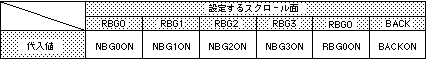

Return to previous page | Return to menu | Go to next page
void
Scroll function
Shadow function settings
void slShadowOn(scrn)
Uint16 scrn ;
scrn Flag corresponding to the scroll screen to set the shadow function
Set the scroll plane to use the shadow function.
Multiple scroll planes can be set simultaneously by connecting multiple parameters in the or format.
None
Refer to the table below for the scroll flags to be assigned to the parameters.

Note) The values in the above table are defined in “sl_def.h” included with the system.
Reference: HARDWEAR MANUAL vol.2 (VDP2)
slShadowOn